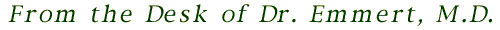

Travis is proving to be a most unusual case. He is motivated enough in his studies that he is not in immediate danger of failing. The primary concern among his teachers is his inability to interact normally with his classmates, and his disconnection from reality. Based on my observations of Travis, and the many reports I've received from his teachers, it's possible that he may suffer from dementia preacox, or psychosis in layman's terms.
Travis' growing reluctance to speak candidly has forced me to employ other methods of reaching the boy's inner world. Thus I've collected a large sample Travis' art work from his teachers. While the other children stick to boats, animals and cars, Travis steadfastly depicts a dark fantasy. It's difficult to determine what exactly dominates his imagination. But I shall try.
In the drawings, there is always a violent light, surrounded by blackness. Some of the drawings contain human-like creatures, perhaps monsters. But these creatures have slowly disappeared from his drawings in the last 18 months. There is often a girl. It's possible that it is a representation of Travis' sister, Christina. Travis will not discuss the drawings or what they mean. Any attempts to discuss this prompts the same response: "You're one of the bad people."
At this stage, I can only surmise that Travis is bedeviled by an earlier trauma in life.